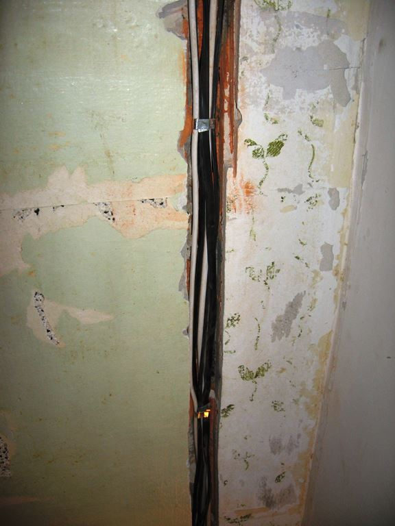

Качественный электромонтаж в Санкт-Петербурге и Ленинградской обл.
Тел. 8 904 642 08 57 Николай.

Проложить электрический кабель.
Частный электрик недорого.
Электрический кабель – профессиональный монтаж в квартире.
Стиральные машины, холодильники, микроволновые печи – какими только приборами не оснащена современная квартира.
Долговечность работы бытовой техники связана с тем, насколько качественной и надёжной является электрическая проводка в квартире.

Монтаж электрокабеля относится к сложным и опасным работам. Любая ошибка человека без опыта может привести к непоправимым последствиям. В связи с этим прокладку кабелей и проводов в квартире лучше доверить профессиональным электрикам, которые прошли специальное обучение, знают технику безопасности и имеют все положенные допуски к таким видам работ.
Сколько стоит проложить электрический кабель?
Работа. |
Цена за метр в рублях. |
Сделать штробу в бетоне. |
От 170 руб. |
Сделать штробу в кирпиче. |
От 80. |
Укладка кабеля с гофрой. |
120. |
Укладка кабеля без гофри. |
От 60. |
Порядок работы профессионального электрика при монтаже электропроводки в квартире.
Специалист изучает квартиру, где предполагается производить работы. Делает замеры помещений, изучает электрический щиток, узнаёт в заказчиков, где и какие именно электроприборы предполагается разместить.
На основании полученных сведений, электрик делает специальный проект электрического снабжения этой квартиры. Сюда входят схема расположения проводов (разводка), перечень домашней бытовой электротехники, расчёт электронагрузок (мощность), расчёт количества расходных материалов – кабелей, проводов и т. д. и их технические характеристики.
При необходимости, делается схема резервного питания квартиры.
- По результатам – рассчитывается и утверждается с заказчиком смета расходов, подписывается договор на услуги.
- После этого, профессиональные электрики приступают к монтажу кабеля в квартире.
- По итогам, заказчик подписывает акт выполненных работ и получает от нашей фирмы гарантию на 10 лет.
- Кабели и провода, разрешённые для использования в жилых помещениях.
Очень надёжным и относительно недорогим электрокабелем, является медный кабель марки ВВГнг. Маленькие буквы «нг» в наименовании всех кабелей обозначают – негорючий. Этот кабель имеет различное сечение, которое выбирается исходя из потребностей.
Провода, которые подходят для внутренней разводки по квартире, марок ПУНП, ПВС, ШВВП обычно имеют по три медных жилы в виниловой оплётке разных цветов.
Способы укладки кабеля в квартире.
Монтаж кабельной проводки может производиться открытым и скрытым способами.
Скрытый монтаж проводится по специально сделанным в стенах штробам. В них укладываются провода, которые протянуты через гофры. Затем штробы заштукатуриваются. Также, к скрытому монтажу относится прокладка проводов под напольным покрытием и навесными потолками.
Открытый монтаж более экономный и простой способ проложить электропроводку в квартире. В этом случае, провода укладываются в заранее закреплённых по помещению пластмассовые кабельные каналы.
Монтаж кабелей и проводов требует специальных знаний и умений. Поэтому, для гарантированного получения хорошего результата, желательно всё-таки обращаться к профессионалам.
 Поменять проводку в квартире.
Поменять проводку в квартире. Сколько будут стоить материалы.
Электрика в загородном доме стоимость работ.

Замена электропроводки в панельном доме.
Расценки на электропроводку квартир.
Замена проводки в хрущевке.
Электромонтаж в частном доме.
Электрика в загородном доме.
Сколько стоит замена электропроводки в двухкомнатной квартире?.
Электрик в новостройку однокомнатная квартира недорого.

Сколько стоит поменять электропроводку в 3-х комнатной квартире.